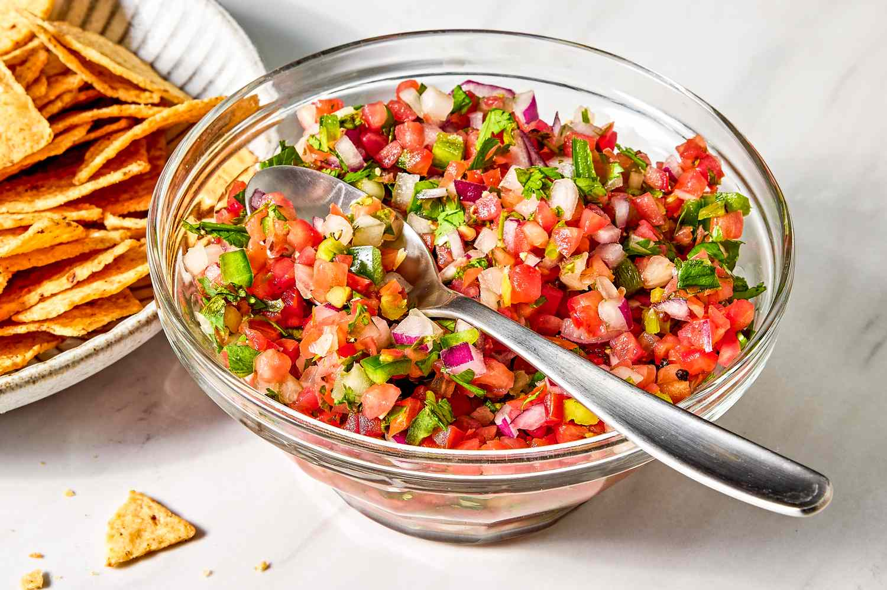

Salsa
Home

Description
Salsa is a staple in Mexican and Tex-Mex cuisine, commonly served as a dip with tortilla chips or as a topping for tacos, burritos, and grilled meats.
Ingredients:-
- ripe tomatoes
- onions
- garlic
- jalapeno peppers
- fresh cilantro
- lime juice
- salt
Steps:-
- Finely dice: Cut the tomatoes, onions, and jalapeños into uniform, small cubes.
- Mince herbs: Finely chop the fresh cilantro leaves and mince the garlic.
- Combine: Toss all the chopped ingredients together in a large mixing bowl.
- Season: Drizzle the fresh lime juice over the mixture and sprinkle with salt.
- Marinate: Stir well and let the mixture sit at room temperature for 10–15 minutes.
- Drain excess liquid: Tomatoes will release juice as they sit with salt. Strain some liquid out before serving if you prefer a drier mix.To